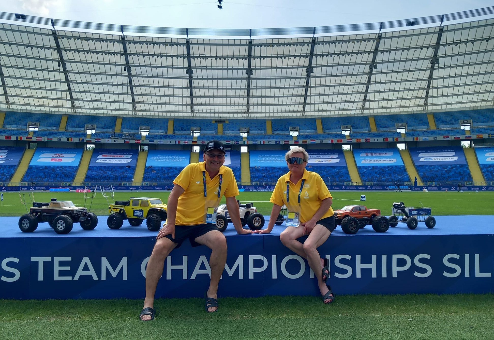
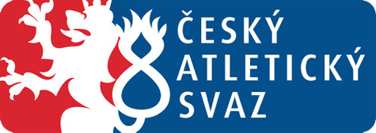
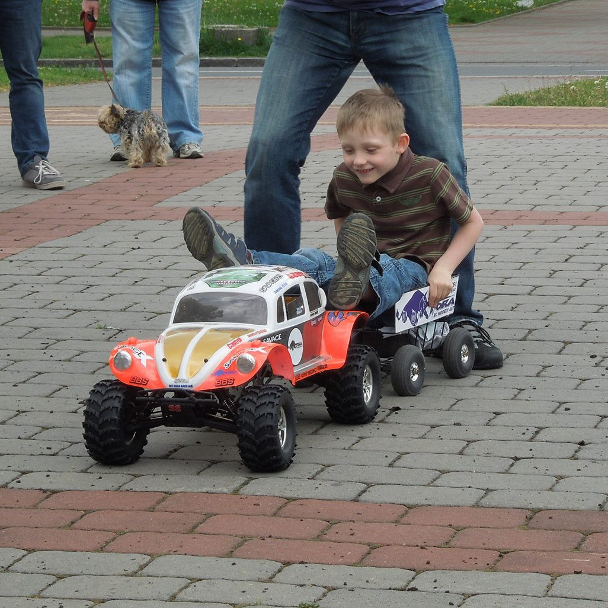
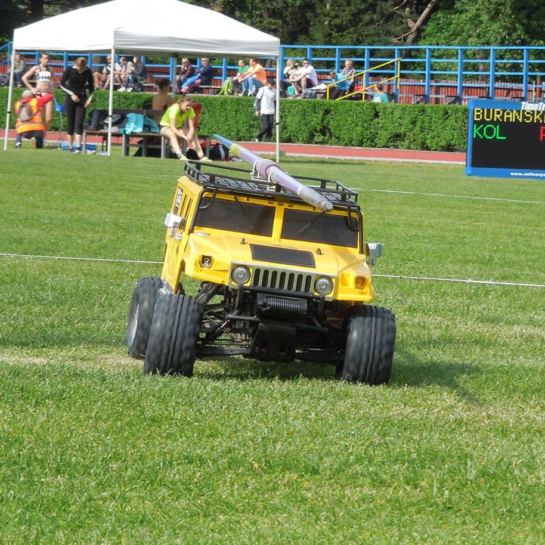
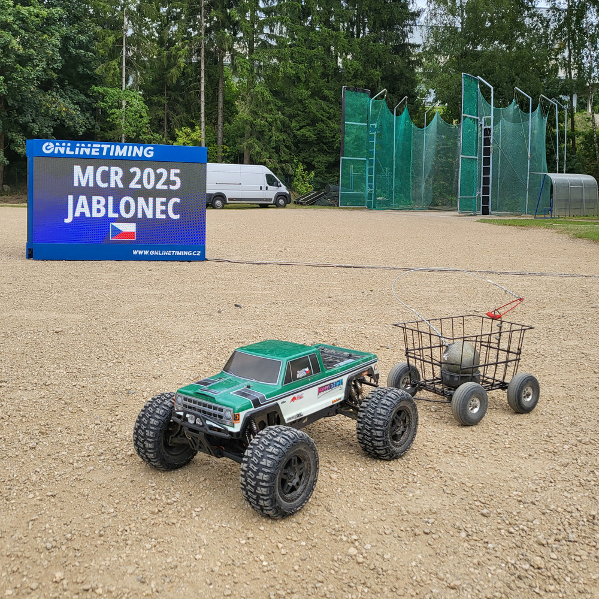

Atletika - svoz náčiní
Na atletických závodech se staráme o přepravu náčiní pomocí speciálně upravených RC modelů aut. Naše auta převážejí oštěpy, kladiva, disky a koule přímo z místa dopadu zpět k závodníkům.

Tuto činnost zajišťujeme už více než 10 let a během té doby jsme se podíleli na řadě menších i větších atletických podniků. Naším cílem je zpříjemnit průběh závodů, urychlit jejich organizaci a také zajistit větší bezpečnost. Zároveň divákům přinášíme netradiční zpestření, které vždy vzbudí pozornost.
Naše atletická stopa






Patří mezi naše nejspolehlivější. jako by byl stvořen pro přivážení kladiv.
Ve volném čase vozí děti.

Vozí oštěpy a zvládá terén jako tank na dovolené.

Kdysi pionýr přepravy oštěpů, první, kdo okusil oštěp na vlastní karoserii (doslova).
Teď práci přenechává mladým.

Krátký rozvor – jezdí na kouli, protože sektor je menší.
Občas se směje ostatním autům, jak se snaží vytočit.

obojživelník, který zvládá všechny povrchy i disciplíny.
Každý hod bere jako osobní rychlostní zkoušku.
Zbytek aut si nepřeje být zveřejněn podle GDPR – respektujeme jejich soukromí.